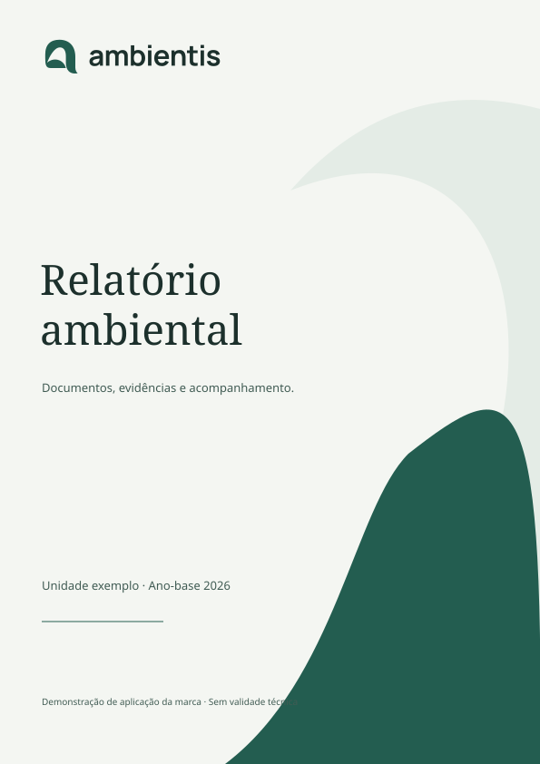

Ambiente para um trabalho bem cuidado.
Identidade visual para organizar evidências, acompanhar decisões e cuidar do trabalho ambiental com clareza.
Proposta 0.1 · 19 de outubro de 2026 · Direção Meridian Forest · Em avaliação

Um símbolo de continuidade.
O “a” como ambiente
Um arco acolhe o espaço interno. A curva se abre como um percurso: informações que chegam, são conferidas e seguem para a entrega. A forma orgânica aproxima natureza e continuidade, sem usar um selo de certificação.
Uso e proteção
- Margem livre: ao menos ¼ da altura do símbolo em todos os lados.
- Símbolo: a partir de 24 px. Logo completo: a partir de 144 px.
- Use o símbolo sozinho em favicon, ícone do app e espaços compactos.
- Use a versão reversa sobre fundos escuros e a monocromática quando houver uma única tinta.
- Preserve proporção, abertura e orientação. Não estique, gire, acrescente efeitos ou coloque texto na área livre.
O símbolo comunica a marca. Não significa aprovação técnica, licença, conformidade ou assinatura.
Forest, de dia e à noite.
#235D50
Marca e ação
#1C302C
Texto principal
#F4F6F2
Plano de fundo
#FCFDF9
Conteúdo
#A5DDCA
Ação em Dusk
#101F26
Fundo em Dusk
A interface usa papéis semânticos de Meridian Forest. Avisos, erros e pendências mantêm cores e palavras próprias; verde não atesta conformidade. Textos e evidências ficam sobre superfícies opacas.
Clareza na voz e na letra.
Fraunces · títulos editoriais
Cuidar também é registrar bem.
Manrope · interface e leitura
Solicitar, conferir e continuar.
Use frases diretas e termos familiares ao trabalho. Explique o que falta, por que importa e qual é o próximo passo. Preserve incertezas e a autoria das informações.
Fontes incluídas com licença SIL Open Font License. O nome nos logos em SVG está convertido em curvas e não depende de fontes instaladas.
Ícones que dizem o que fazem.
Grade de 24 px, traço de 1,7 px e terminações arredondadas. O conjunto combina símbolos de Meridian para o projeto com utilitários desenhados na mesma linguagem. Rótulos e foco de teclado acompanham as ações.
Presença sem excesso.

Documentos e comunicação
Use o logo com respiro e o grafismo em áreas de abertura. Tabelas, dados técnicos, assinaturas e evidências permanecem limpos e legíveis. A marca apoia a leitura; o conteúdo técnico continua sendo revisado pela profissional.

Movimento com propósito.
| Interação | Regra |
|---|---|
| Hover e pressão | 140 ms para hover; 80 ms para contato. Feedback por superfície, contorno e profundidade, sem salto brusco. |
| Menus e diálogos | Até 320 ms. A forma se abre suavemente a partir do controle de origem, com contorno orgânico e liberação de 220 ms. |
| Mudança de tela | Transição do conteúdo com direção de entrada/retorno. A navegação mantém seu contexto. |
| Acessibilidade | Movimento reduzido remove deslocamentos. Ações continuam funcionando sem depender da animação. Foco e seleção são estados distintos. |
Arquivos para usar e revisar.
O kit reúne logos horizontais e símbolos em SVG e PNG transparente, versões Forest/reversa/preta/branca, ícones de aplicativo, favicon, 13 ícones semânticos, grafismo, capa, assinatura de e-mail, fontes e este guia.